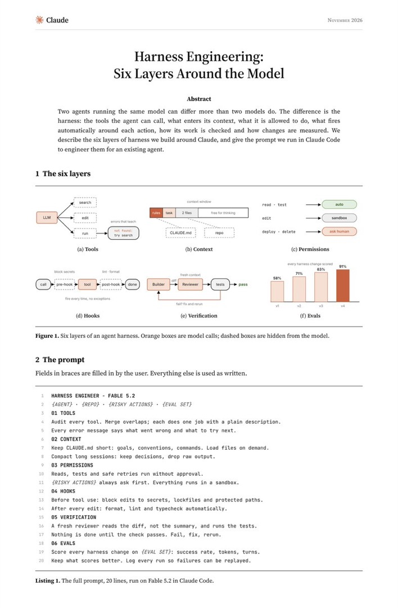
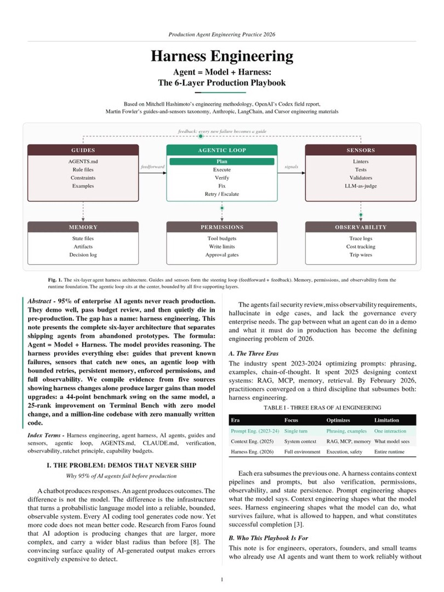
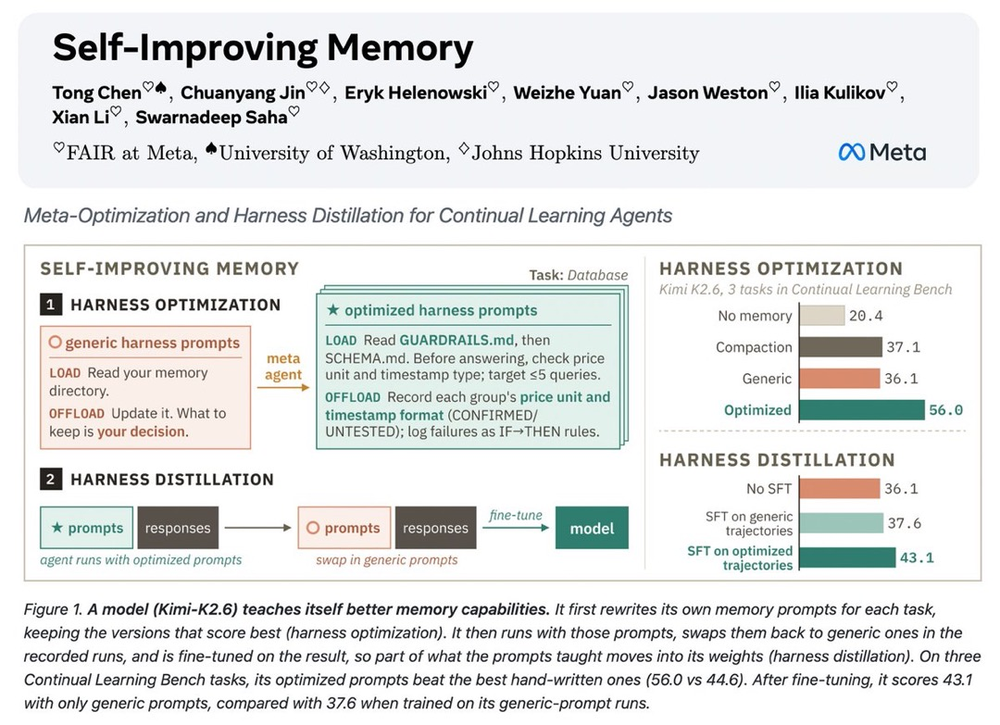

本期速览
01 Agent-as-a-Judge长程评测
02 Claude Code 六层Harness
04 Harness工程使任务通过率翻倍
05 Meta RAM 自改进记忆入权重
06 OpenAI GPT-6.2 双模型发布
01｜Agent-as-a-Judge长程评测
来源（X） · @JudgmentLabs · 2026-11-18 04:16
中文译文
推出 Agent-as-a-Judge：评估超过 1M token 的长周期 agent。
我们超过 20% 的轨迹超过 1M token，最大的超过 1B+；对 LLM 评审来说太长了。超过 1M 之后，agent 评审在成本低 62% 的情况下，F1 得分比分块 LLM 评审高 0.21。https://x.com/i/article/2122744513387220992
原文
Introducing Agent-as-a-Judge: evaluating long-horizon agents beyond 1M tokens.
20%+ of our trajectories exceed 1M tokens, the largest 1B+; too long for an LLM judge. Past 1M, agent judge scored 0.21 higher F1 at 62% lower cost than chunked LLM judges. https://x.com/i/article/2122744513387220992
02｜Claude Code 六层Harness
来源（X） · @0xTrackmind · 2026-11-18 03:01
中文译文
这篇 harness 论文真是金矿
Anthropic 的工程师们揭示了 Claude Code 真正好用的原因。剧透：不是模型。
秘密在于：harness。这就是全部差距所在。
prompt 工程 → 上下文工程 → harness 工程。
harness 的 6 层：
第 1 层 → 工具
更少的工具，每个只干一件事。
每次报错都会告诉 agent 下一步该试什么。
第 2 层 → 上下文
精简的 CLAUDE.md → 按需加载文件 → 满了就压缩。
第 3 层 → 权限
读取 + 测试 → 自动。
部署 + 删除 → 问人。
一切 → 沙箱。
第 4 层 → 钩子
工具运行前 → 拦截机密和受保护文件。
每次编辑后 → 格式化、lint、类型检查。没有例外。
第 5 层 → 验证
全新的评审者读 diff，不读摘要 → 跑测试 → 失败？修 → 重跑。
第 6 层 → 评估
每次 harness 变更都打分 → 成功率、token 数、轮数 → 留下胜出的。
模型是引擎。harness 是整辆车。
他们甚至把这 6 层打包成了一个 prompt。粘贴到 Claude Code 里，它就替你完成 harness 工程。
6 层。1 个 prompt。0 个无限循环。
完整解析见下方 Harness Engineering 指南 ↓
原文
this harness paper is f*cking gold
Anthropic engineers revealed what actually makes Claude Code work so well. spoiler: it's not the model.
the secret: the harness. that's the whole gap.
prompt engineering → context engineering → harness engineering.
the 6 layers of the harness:
layer 1 → tools
fewer tools, one job each.
every error tells the agent what to try next.
layer 2 → context
short CLAUDE.md → files on demand → compaction when it fills up.
layer 3 → permissions
reads + tests → auto.
deploys + deletes → ask a human.
everything → sandbox.
layer 4 → hooks
before a tool runs → block secrets and protected files.
after every edit → format, lint, typecheck. no exceptions.
layer 5 → verification
fresh reviewer reads the diff, not the summary → runs the tests → fail? fix → rerun.
layer 6 → evals
every harness change scored → success, tokens, turns → keep what wins.
the model is the engine. the harness is the whole car.
they even packed all 6 layers into one prompt. paste it into Claude Code and it engineers the harness for you.
6 layers. 1 prompt. 0 infinite loops.
full breakdown in the Harness Engineering guide below ↓

引用内容
Trackmind @0xTrackmind
中文译文
原文
03｜麦田开源多平台自媒体运营
来源（X） · @liyue_ai · 2026-11-17 10:44
1⃣项目把每个平台每天的内容数据都进行了可视化。
2⃣哪个平台涨粉快，哪个平台转化好，都能一眼看出来，特别适合多平台运营的用户。
3⃣还贴心的配备了发布助手插件，多个平台快速上传，你只需要去点下发布。
项目地址：https://github.com/CzzzzzzJ/mdldm-maitian
插件助手：https://chromewebstore.google.com/detail/%E9%BA%A6%E7%94%B0%E5%8F%91%E5%B8%83%E5%8A%A9%E6%89%8B/eaaipbilkhibicihiollecmbpneikpnj
引用内容
麦当mdldm @czzzzzzJ_
中文译文
原文
04｜Harness工程使任务通过率翻倍
来源（X） · @AnnatarXBT · 2026-11-17 14:48
中文译文
相同的模型、相同的 prompt、相同的 20 个真实任务。只有 harness 变了
Opus 5.5 配裸 prompt：20 个任务中 8 个无需修改即通过
Opus 5.5 加一个周末的 harness 工作：16/20
> 失控重试循环：5 → 0
> 每个通过任务的成本：约 $4.10 → $1.60
> 每天人工看护时间：约 2 小时 → 25 分钟
他加了什么：每个任务一行"完成条件"、一个 40 行的地图文件、一个测试门槛、重试上限三次，以及一份规定 agent 可以触碰哪些东西的规则文件
更长的 prompt 只能修好五层中的一层。围绕 Fable 5.2 构建的其余四层，在下方指南中：
原文
same model, same prompt, same 20 real tasks. only the harness changed
Opus 5.5 with a bare prompt: 8 of 20 tasks accepted without edits
Opus 5.5 plus one weekend of harness work: 16 of 20
> runaway retry loops: 5 -> 0
> cost per accepted task: about $4.10 -> $1.60
> babysitting per day: about 2 hours -> 25 minutes
what he added: a "done when" line per task, a 40-line map file, a test gate, a retry cap of three and a rule file for what the agent may touch
a longer prompt fixes one of the five layers. the other four, built around Fable 5.2, are in the guide below:

引用内容
Annatar.md @AnnatarXBT
中文译文
Claude Fable 5.2 + jev 工程的完整 harness 指南
一个晚上学完这个，Claude 就能干一个小型开发团队的活
不需要 $550/月的课程：https://x.com/i/article/2120740198405357568
原文
full harness guide for Claude Fable 5.2 + jev engineering
one evening with this and Claude does the work of a small dev team
no $550/month course needed: https://x.com/i/article/2120740198405357568
05｜Meta RAM 自改进记忆入权重
来源（X） · @jaseweston · 2026-11-17 22:01
中文译文
推出：自我改进记忆 🧠✨📈
我们让模型自行发现记忆技能，然后将这些技能训练进权重：
- 从模型自身的运行中元优化记忆，获得大幅提升。
- 蒸馏这些提升同样有效。
博客文章：📝 https://facebookresearch.github.io/RAM/blogs/self_improving_memory
🧵1/6
原文
Introducing: Self-Improving Memory 🧠✨📈
We let the model discover its own memory skills, then train them into its weights:
- Meta-optimizes memory from the model's own runs with large gains.
- Distilling these gains works too.
Blog post: 📝 https://facebookresearch.github.io/RAM/blogs/self_improving_memory
🧵1/6

06｜OpenAI GPT-6.2 双模型发布
来源（X） · @0xlangeai · 2026-11-18 07:58
先看官方评测口径。Astra 在多步专业工作基准 Agents’ Last Exam 上比 GPT-6 Astra 高 5.2 分，单任务成本不到三分之一；在 Terminal-Bench-Science 0.1 上高 9 个百分点，成本同样不到三分之一。Sol 在 Cognition 的 FrontierCode 2.0 上，分数只比 Astra 低 0.5 分，成本大约是五分之一。这些都是指定评测里的结果，不代表所有任务。
即日起可在 ChatGPT Work 和 Codex 里用，面向 Plus、Pro、企业版和教育版，后两档需管理员开通。Pro 500 两个模型都有 Ultrafast；Pro 200 第一次能用上 Sol 的 Ultrafast。开发者也可在 API 调用 gpt-6.2-astra 和 gpt-6.2-sol，Astra 的输入和输出价格比上一代低 20%。
官方同时称，Astra 是他们迄今最强的网络安全能力版本，并为此加了更严的高风险协助限制。